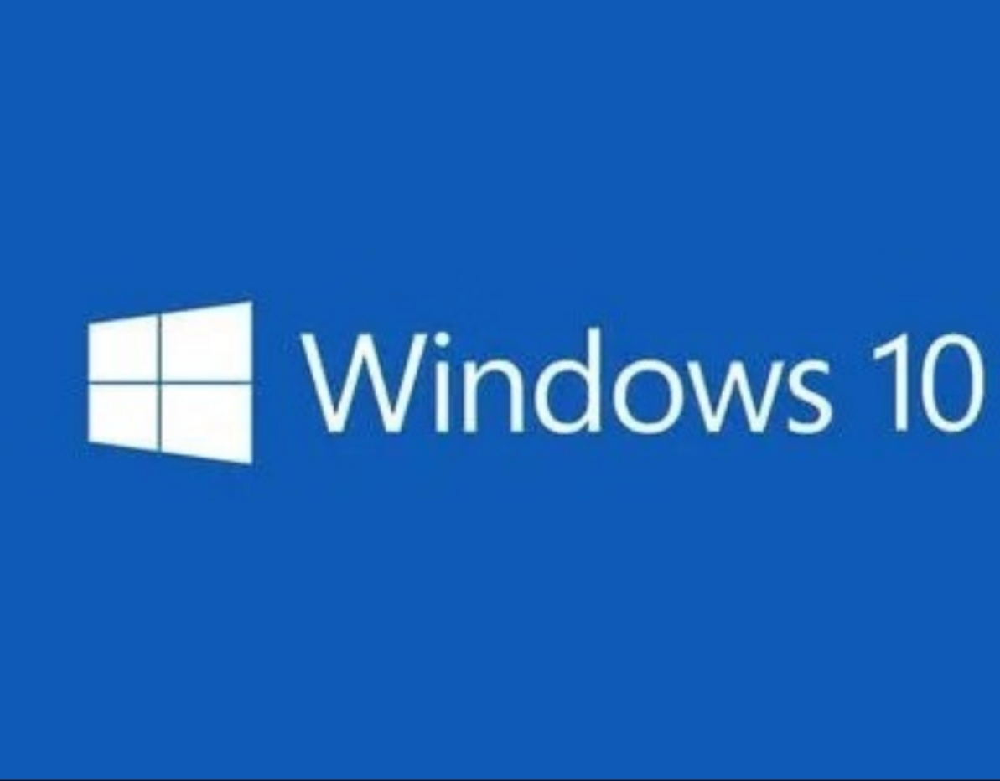

<title>各超频天地元老介绍</title>
<body background="背景.jpg"></body>
<object height="5" width="5" data="赐我.mp3"></object>
<font color="#FFFFFF">
<h3><font color="#FFFF00">SL苏龙:</font>JavaScript、HTML入门者</h3>
<h3><font color="#FFFF00">秃头小绿:</font>模拟电路专家，硬件大佬</h3>
<h3><h3><font color="#FFFF00">小东(技术支持):</font>JAVA、C语言、Python、CSS、JavaScript、HTML大佬，网络安全专家，Linux专家</h3>
<h3><font color="#FFFF00">可乐(技术支持):</font>JAVA、C语言、Python、CSS、JavaScript、HTML大佬，Linux专家</h3>
<h3><font color="#FFFF00">电脑杀手:</font>HTML、Python初学者，Linux初学者</h3>
<h3><font color="#FFFF00">清风少年:</font>C语言入门者，系统/硬件魔改大佬</h3>
<h3><font color="#FFFF00">小绿童鞋丶:</font>C语言、JAVA大佬，网络安全专家</h3>
<h3><font color="#FFFF00">谭圣哲:</font>C++初学者Python入门者</h3>
<h3><font color="#FFFF00">Windows蓝屏助理：</font>系统魔改大佬</h3>
<h3><font color="#FFFF00">dev_mc_hm:</font>C语言、JAVA入门者</h3>
<h3><font color="#FFFF00">摆烂三水:</font>Python大佬</h3>
  <button><a href="3.html">元老排行榜==></a></button>
  <h6>1</h6>
<style>
a:link {color:#000000;}      
a:visited {color:#FF0000;}  
a:hover {color:#FF00FF;}
a:active {color:#FFFF00;}  
</style>

